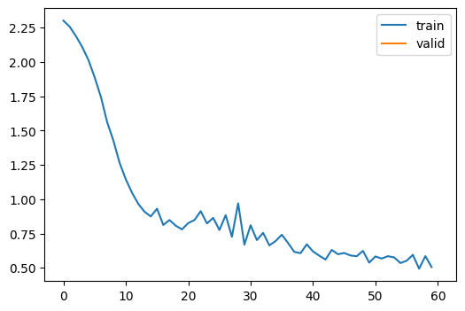
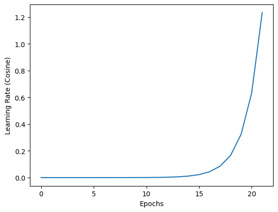
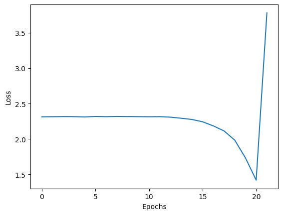
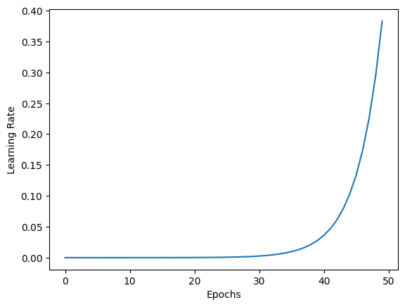
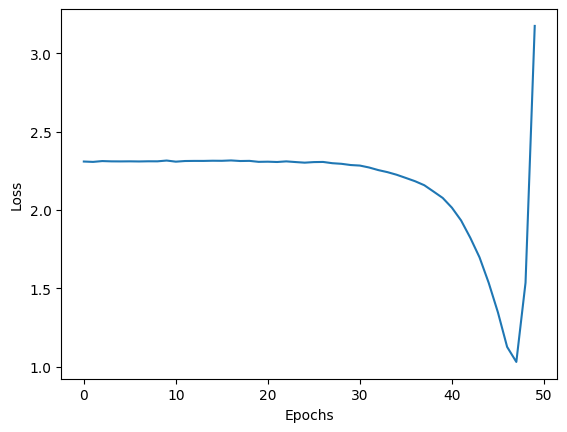

import matplotlib as mpl
import torchvision.transforms.functional as TF
from contextlib import contextmanager
from torch import nn,tensor
from datasets import load_dataset,load_dataset_builder
from miniai.datasets import *
from miniai.conv import *
import logging
from fastcore.test import test_close
import numpy as np::: {.cell 0=‘e’ 1=‘x’ 2=‘p’ 3=‘o’ 4=‘r’ 5=‘t’ execution_count=6}
try:
import fastcore.all
except:
import sys
sys.path.append('/Users/mannypardo/DEV/GitHub/course22p2')
import fastcore.all as fc
from miniai.conv import *
import math,torch,matplotlib.pyplot as plt
from collections.abc import Mapping
from operator import attrgetter
from functools import partial
from copy import copy
from torch import optim
import torch.nn.functional as F
from fastprogress import progress_bar,master_bar:::
In [7]:
In [8]:
torch.set_printoptions(precision=2, linewidth=140, sci_mode=False)
torch.manual_seed(1)
mpl.rcParams['image.cmap'] = 'gray'In [9]:
logging.disable(logging.WARNING)In [10]:
x,y = 'image','label'
name = "fashion_mnist"
dsd = load_dataset(name)In [11]:
@inplace
def transformi(b): b[x] = [torch.flatten(TF.to_tensor(o)) for o in b[x]]In [12]:
bs = 512
lr = 0.2
m,nh = 28*28,50
model = nn.Sequential(nn.Linear(m,nh), nn.ReLU(), nn.Linear(nh,10))
def get_model(): return nn.Sequential(nn.Linear(m,nh), nn.ReLU(), nn.Linear(nh,10))In [13]:
tds = dsd.with_transform(transformi)
dls = DataLoaders.from_dd(tds, bs, num_workers=4)
dt = dls.train
xb,yb = next(iter(dt))
xb.shape,yb[:10](torch.Size([512, 784]), tensor([2, 8, 7, 3, 0, 3, 2, 8, 6, 9]))Basic Callbacks Learner
In [14]:
class CancelFitException(Exception): pass
class CancelBatchException(Exception): pass
class CancelEpochException(Exception): passIn [15]:
class Callback(): order = 0In [16]:
def run_cbs(cbs, method_nm, learn=None):
for cb in sorted(cbs, key=attrgetter('order')):
method = getattr(cb, method_nm, None)
if method is not None: method(learn)Metrics
In [17]:
class Metric:
def __init__(self): self.reset()
def reset(self): self.vals,self.ns = [],[]
def add(self, inp, targ=None, n=1):
self.last = self.calc(inp, targ)
self.vals.append(self.last)
self.ns.append(n)
@property
def value(self):
ns = tensor(self.ns)
return (tensor(self.vals)*ns).sum()/ns.sum()
def calc(self, inps, targs): return inps
In [18]:
class Accuracy(Metric):
def calc(self, inps, targs): return (inps==targs).float().mean()Some callbacks
pip install torchevalIn [19]:
from torcheval.metrics import MulticlassAccuracy,MeanIn [20]:
def to_cpu(x):
if isinstance(x, Mapping): return {k:to_cpu(v) for k,v in x.items()}
if isinstance(x, list): return [to_cpu(o) for o in x]
if isinstance(x, tuple): return tuple(to_cpu(list(x)))
res = x.detach().cpu()
return res.float() if res.dtype==torch.float16 else resIn [21]:
class MetricsCB(Callback):
def __init__(self, *ms, **metrics):
for o in ms: metrics[type(o).__name__] = o
self.metrics = metrics
self.all_metrics = copy(metrics)
self.all_metrics['loss'] = self.loss = Mean()
def _log(self, d): print(d)
def before_fit(self, learn): learn.metrics = self
def before_epoch(self, learn): [o.reset() for o in self.all_metrics.values()]
def after_epoch(self, learn):
log = {k:f'{v.compute():.3f}' for k,v in self.all_metrics.items()}
log['epoch'] = learn.epoch
log['train'] = 'train' if learn.model.training else 'eval'
self._log(log)
def after_batch(self, learn):
x,y,*_ = to_cpu(learn.batch)
for m in self.metrics.values(): m.update(to_cpu(learn.preds), y)
self.loss.update(to_cpu(learn.loss), weight=len(x))In [22]:
class DeviceCB(Callback):
def __init__(self, device=def_device): fc.store_attr()
def before_fit(self, learn):
if hasattr(learn.model, 'to'): learn.model.to(self.device)
def before_batch(self, learn): learn.batch = to_device(learn.batch, device=self.device)Flexible learner
In [23]:
class TrainCB(Callback):
def __init__(self, n_inp=1): self.n_inp = n_inp
def predict(self, learn): learn.preds = learn.model(*learn.batch[:self.n_inp])
def get_loss(self, learn): learn.loss = learn.loss_func(learn.preds, *learn.batch[self.n_inp:])
def backward(self, learn): learn.loss.backward()
def step(self, learn): learn.opt.step()
def zero_grad(self, learn): learn.opt.zero_grad()NB: I added self.n_inp after the lesson. This allows us to train models with more than one input or output.
In [24]:
class ProgressCB(Callback):
order = MetricsCB.order+1
def __init__(self, plot=False): self.plot = plot
def before_fit(self, learn):
learn.epochs = self.mbar = master_bar(learn.epochs)
self.first = True
if hasattr(learn, 'metrics'): learn.metrics._log = self._log
self.losses = []
self.val_losses = []
def _log(self, d):
if self.first:
self.mbar.write(list(d), table=True)
self.first = False
self.mbar.write(list(d.values()), table=True)
def before_epoch(self, learn): learn.dl = progress_bar(learn.dl, leave=False, parent=self.mbar)
def after_batch(self, learn):
learn.dl.comment = f'{learn.loss:.3f}'
if self.plot and hasattr(learn, 'metrics') and learn.training:
self.losses.append(learn.loss.item())
if self.val_losses: self.mbar.update_graph([[fc.L.range(self.losses), self.losses],[fc.L.range(learn.epoch).map(lambda x: (x+1)*len(learn.dls.train)), self.val_losses]])
def after_epoch(self, learn):
if not learn.training:
if self.plot and hasattr(learn, 'metrics'):
self.val_losses.append(learn.metrics.all_metrics['loss'].compute())
self.mbar.update_graph([[fc.L.range(self.losses), self.losses],[fc.L.range(learn.epoch+1).map(lambda x: (x+1)*len(learn.dls.train)), self.val_losses]])NB: Added validation loss plotting after the lesson.
In [25]:
bs = 1014
lr = 0.9
m,nh = 28*28,100
tds = dsd.with_transform(transformi)
dls = DataLoaders.from_dd(tds, bs, num_workers=4)
dt = dls.train
xb,yb = next(iter(dt))
xb.shape,yb[:10](torch.Size([1014, 784]), tensor([8, 8, 5, 0, 6, 2, 5, 1, 8, 4]))In [26]:
class with_cbs:
def __init__(self, nm): self.nm = nm
def __call__(self, f):
def _f(o, *args, **kwargs):
try:
o.callback(f'before_{self.nm}')
f(o, *args, **kwargs)
o.callback(f'after_{self.nm}')
except globals()[f'Cancel{self.nm.title()}Exception']: pass
finally: o.callback(f'cleanup_{self.nm}')
return _fIn [27]:
class Learner():
def __init__(self, model, dls=(0,), loss_func=F.mse_loss, lr=0.1, cbs=None, opt_func=optim.SGD):
cbs = fc.L(cbs)
fc.store_attr()
@with_cbs('batch')
def _one_batch(self):
self.predict()
self.callback('after_predict')
self.get_loss()
self.callback('after_loss')
if self.training:
self.backward()
self.callback('after_backward')
self.step()
self.callback('after_step')
self.zero_grad()
@with_cbs('epoch')
def _one_epoch(self):
for self.iter,self.batch in enumerate(self.dl): self._one_batch()
def one_epoch(self, training):
self.model.train(training)
self.dl = self.dls.train if training else self.dls.valid
self._one_epoch()
@with_cbs('fit')
def _fit(self, train, valid):
for self.epoch in self.epochs:
if train: self.one_epoch(True)
if valid: torch.no_grad()(self.one_epoch)(False)
def fit(self, n_epochs=1, train=True, valid=True, cbs=None, lr=None):
cbs = fc.L(cbs)
# `add_cb` and `rm_cb` were added in lesson 18
for cb in cbs: self.cbs.append(cb)
try:
self.n_epochs = n_epochs
self.epochs = range(n_epochs)
if lr is None: lr = self.lr
if self.opt_func: self.opt = self.opt_func(self.model.parameters(), lr)
self._fit(train, valid)
finally:
for cb in cbs: self.cbs.remove(cb)
def __getattr__(self, name):
if name in ('predict','get_loss','backward','step','zero_grad'): return partial(self.callback, name)
raise AttributeError(name)
def callback(self, method_nm): run_cbs(self.cbs, method_nm, self)
@property
def training(self): return self.model.trainingTrainLearner and MomentumLearner
In [28]:
class TrainLearner(Learner):
def predict(self): self.preds = self.model(self.batch[0])
def get_loss(self): self.loss = self.loss_func(self.preds, self.batch[1])
def backward(self): self.loss.backward()
def step(self): self.opt.step()
def zero_grad(self): self.opt.zero_grad()In [29]:
class MomentumLearner(TrainLearner):
def __init__(self, model, dls, loss_func, lr=None, cbs=None, opt_func=optim.SGD, mom=0.85):
self.mom = mom
super().__init__(model, dls, loss_func, lr, cbs, opt_func)
def zero_grad(self):
with torch.no_grad():
for p in self.model.parameters(): p.grad *= self.momIn [30]:
metrics = MetricsCB(accuracy=MulticlassAccuracy())
cbs = [DeviceCB(), metrics, ProgressCB(plot=True)]
learn = MomentumLearner(get_model(), dls, F.cross_entropy, lr=0.1, cbs=cbs)
learn.fit(1)| accuracy | loss | epoch | train |
|---|---|---|---|
| 0.693 | 0.916 | 0 | train |
| 0.785 | 0.586 | 0 | eval |

LRFinderCB
In [75]:
class CosAnnealCB(Callback):
def __init__(self, lr_mult=1.3):
fc.store_attr()
def before_fit(self, learn):
self.epochs, self.lrs,self.losses = [],[], []
self.min = math.inf
self.t_iter = len(learn.dls.train) * learn.n_epochs
def after_batch(self, learn):
if not learn.training: raise CancelEpochException()
self.lrs.append(learn.opt.param_groups[0]['lr'])
loss = to_cpu(learn.loss)
c_iter = learn.iter
self.losses.append(loss)
self.epochs.append(c_iter)
if loss < self.min: self.min = loss
if loss > self.min*2: raise CancelFitException()
for g in learn.opt.param_groups: g['lr'] *= self.lr_mult
g['lr'] = g['lr']*max(np.cos((1-4.0*np.pi*(c_iter / self.t_iter))),1.5)
In [76]:
lrfind = CosAnnealCB()
metrics = MetricsCB(accuracy=MulticlassAccuracy())
cbs = [DeviceCB(), lrfind]
learn = MomentumLearner(get_model(), dls, F.cross_entropy, lr=1e-6, cbs=cbs)
learn.fit(1)In [77]:
plt.plot(lrfind.epochs, lrfind.lrs)
plt.xlabel('Epochs')
plt.ylabel('Learning Rate (Cosine)')
plt.xscale('linear')
In [78]:
plt.plot(lrfind.epochs, lrfind.losses)
plt.xlabel('Epochs')
plt.ylabel('Loss')
plt.xscale('linear')
In [72]:
class LRFinderCB(Callback):
def __init__(self, lr_mult=1.3):
fc.store_attr()
def before_fit(self, learn):
self.epochs, self.lrs,self.losses = [],[], []
self.min = math.inf
self.t_iter = len(learn.dls.train) * learn.n_epochs
def after_batch(self, learn):
if not learn.training: raise CancelEpochException()
self.lrs.append(learn.opt.param_groups[0]['lr'])
loss = to_cpu(learn.loss)
c_iter = learn.iter
self.losses.append(loss)
self.epochs.append(c_iter)
if loss < self.min: self.min = loss
if loss > self.min*2: raise CancelFitException()
for g in learn.opt.param_groups: g['lr'] *= self.lr_multIn [73]:
lrfind = LRFinderCB()
metrics = MetricsCB(accuracy=MulticlassAccuracy())
cbs = [DeviceCB(), lrfind]
learn = MomentumLearner(get_model(), dls, F.cross_entropy, lr=1e-6, cbs=cbs)
learn.fit(1)In [74]:
plt.plot(lrfind.epochs, lrfind.lrs)
plt.xlabel('Epochs')
plt.ylabel('Learning Rate')
plt.xscale('linear')
In [51]:
plt.plot(lrfind.epochs, lrfind.losses)
plt.xlabel('Epochs')
plt.ylabel('Loss')
plt.xscale('linear')